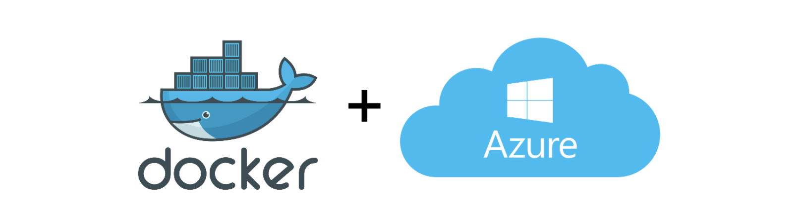

3.2. Deploy¶
The concept of microservices that allows several small applications to communicate with each other to provide a specific functionality. If the number of applications grows in our system, it becomes complicated to manage. Docker is not enough, as we need coordination for deployment, service monitoring, replacement, automatic scaling and, ultimately, management of the various services that make up our distributed architecture. This is where Kubernetes comes in.
Kubernetes is an open source platform for automating the deployment, scaling and management of containerised applications.
- Ready to scale. You can scale without growing your operations team.
- Ready for any complexity. The flexibility of Kubernetes grows with you to deliver your applications consistently and easily regardless of complexity.
- Ready to run anywhere. It’s open source which gives you the freedom to leverage your on-premises, hybrid or public cloud infrastructure, allowing you to effortlessly move workloads wherever you want.
First, we need to store our Docker images somewhere besides on our laptops. The Kubernetes cluster needs a fast and reliable Docker repository from which to pull the images. For this, we use Azure Container Registry.
Steps to upload images to the Azure Container Registry using Azure-CLI:
- Log in to Azure:
az login. - If there is more than one subscription, select the one where the service has been created through this other command:
az account set -s SUBSCRIPTION_ID. - Login to the Azure Container Registry, entering your name:
az acr login --name <name_acr>. - If the login was successful, the Login Succeeded message will appear. Before uploading the image to any registry it is necessary to use a specific nomenclature. In the case of Docker Hub it would be: your_username/repository:tag. For Azure Container Registry it is registry_server_name/repository:tag. Therefore, you have to run the
docker tagcommand to rename the image according to this nomenclature. The server name can be found in Azure, in the Container Registry Overview as “login server”. - Publish the image to the Azure Container Registry, via
docker push <image_name>. When the upload is complete, you will see the image in the Repositories section of the Azure Container Registry.
Now that you have built and pushed your Docker images, you can deploy them to your Kubernetes cluster. The quickest way to get started is by using kubectl.
For this we will need this Docker image located in the Container Registry (to which the Kubernetes cluster will have access) and the manifests files that will allow us to configure the deployments and services associated with each microservice.
The latter files will be YAML files containing the following information:
- Deployment.yaml: Describing a scalable group of identical pods. In the following example, you’ll get just one replica, or copy of your pod, and that pod (which is described under the template: key) has just one container in it, based off of your bulletinboard:1.0 image.
apiVersion: apps/v1
kind: Deployment
metadata:
name: bb-demo
namespace: default
spec:
replicas: 1
selector:
matchLabels:
bb: web
template:
metadata:
labels:
bb: web
spec:
containers:
- name: bb-site
image: getting-started
- Service.yaml: A NodePort service. In the following example it will route traffic from port 30001 on your host to port 3000 inside the pods it routes to, allowing you to reach your bulletin board from the network. For Dx29 application we are going to create services as ClusterIP.
apiVersion: v1
kind: Service
metadata:
name: bb-entrypoint
namespace: default
spec:
type: NodePort
selector:
bb: web
ports:
- port: 3000
targetPort: 3000
nodePort: 30001
Both files, always follows the same pattern:
- The apiVersion, which indicates the Kubernetes API that parses this object
- The kind indicating what sort of object this is
- Some metadata applying things like names to your objects
- The spec specifying all the parameters and configurations of your object.
As we already know some of the microservices we are going to run will need an associated volume that will contain the value of the keys or the secret values of the Dx29 application. To add this volume, the deployment.yaml file must be configured with a volume in its spec:
[...]
spec:
containers:
[...]
volumeMounts:
- name: secrets
mountPath: /app/secrets
readOnly: true
volumes:
- name: secrets
secret:
secretName: secret-appsettings
With this we can deploy the container with the microservice to the Kubernetes cluster following these steps:
- Log in to Azure:
az login. - Log in in AKS:
az aks get-credentials --resource-group myResourceGroup --name myAKSCluster - Apply deployment yaml. This makes it accessible from any node in your cluster:
kubectl apply -f deployment.yaml - Creating a service: A Kubernetes Service is an abstraction which defines a logical set of Pods running somewhere in your cluster, that all provide the same functionality. When created, each Service is assigned a unique IP address (also called clusterIP). This address is tied to the lifespan of the Service, and will not change while the Service is alive. Pods can be configured to talk to the Service, and know that communication to the Service will be automatically load-balanced out to some pod that is a member of the Service.
kubectl apply -f service.yaml
If we want to expose a microservice by a public IP (external), the following must be added to this configuration:
- Expose the Kubernetes Deployment through a Load Balancer: The service.yaml will be LoadBalancer.
apiVersion: v1
kind: Service
metadata:
name: dx29-apigateway
namespace: app-ingress
spec:
type: LoadBalancer
ports:
- port: 80
selector:
app: dx29-apigateway-backend
- Find the external IP of your Container:
kubectl get svc. And now you know the external IP address of your container: the microservice is now exposed onhttp://<public_IP>:<port>. Go to Azure Portal, access this Public IP resource and configure a DNS.
The Dx29 application frontend is already associated to nginx, so it is already exposed through a public IP address and DNS configured in the Cluster. We did this when we first created the environment as seen in section 2.4 of this document, following these steps for Azure deployment.